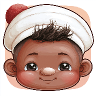

Achei!
Em breve na App StoreBrincadeira de achar para aprender os nomes das coisas em português e em inglês.
Conhecer o Achei!Estúdio de apps para a primeira infância

Brincadeira de achar para aprender os nomes das coisas em português e em inglês.
Conhecer o Achei!Uma estante onde a criança escolhe o livro e ouve a história narrada com calma, do jeitinho que você leria.
Conhecer o SolêNão dá para fingir que a tela não faz parte da infância de hoje. Então a gente faz a nossa parte: cada minuto no nosso app é calmo, sem armadilhas e com um propósito.
É esse o único padrão de qualidade que aceitamos. Se não serve para os nossos, não serve para os seus.
Cada app tem a sua política de privacidade, clara e por escrito. Nada de rastreamento comercial das crianças.
Nada de propaganda, botão escondido ou compra por impulso. O tempo de tela é da criança, não de quem quer vender algo.
Sem pressa e sem pressão, nada de relógio correndo. A criança explora no ritmo dela, do jeito dela — porque a gente respeita quem ela é.